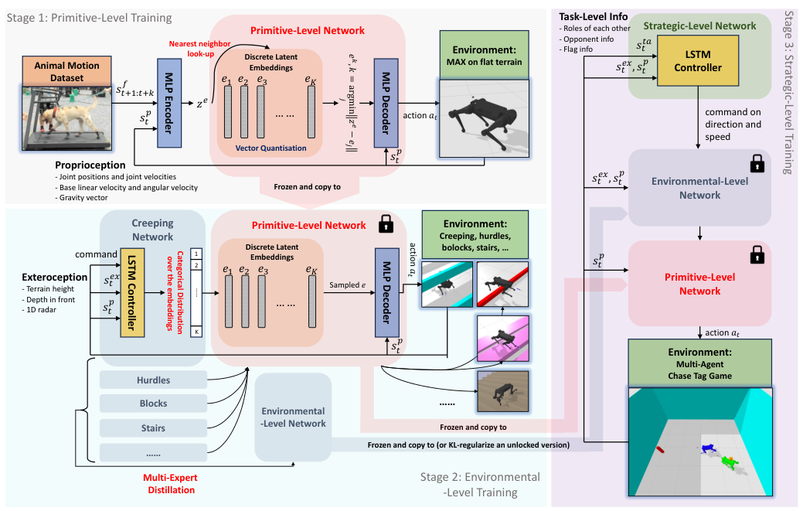
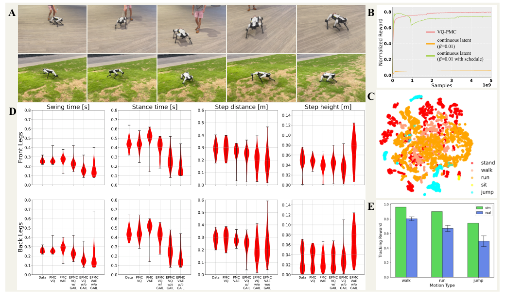
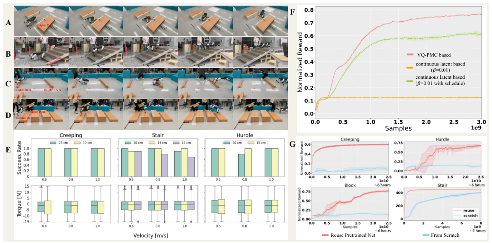
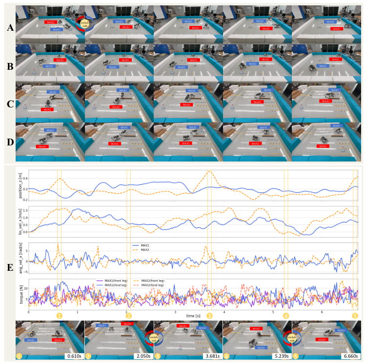
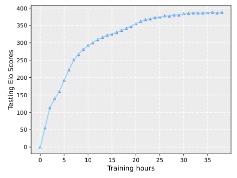

Background & Motivation
這篇把「大型生成式預訓練」的想法搬進四足機器人控制:先用 RL 讓一個 VQ-VAE 式離散 latent 控制器(VQ-PMC)模仿一隻拉布拉多的所有 mocap 動作,把「怎麼像動物一樣動」壓進 256 個離散碼;再凍結這個 decoder,往上疊環境層(看地形、學鑽桿/跨欄/跳箱/上樓梯)與策略層(用 self-play 玩雙機 Chase Tag)。三層各自可預訓練、重用、擴充,並零樣本部署到自研 14 kg 四足 MAX,在實機上出現撲擊、放棄追逐、徘徊等「像動物」的行為。
This paper ports the idea of large generative pre-training into quadruped control. First, RL trains a VQ-VAE-style discrete-latent controller (VQ-PMC) to imitate every mocap clip of a Labrador retriever, compressing "how to move like an animal" into 256 discrete codes. That decoder is then frozen, and an environmental level (perceives terrain; learns creeping, hurdles, blocks, stairs) and a strategic level (plays a two-robot Chase Tag game via self-play) are stacked on top. Each level is pre-trainable, reusable and enrichable, and the whole stack is deployed zero-shot on the in-house 14 kg MAX quadruped, where animal-like behaviours (pouncing, giving up a chase, wandering) appear on real hardware.
如果只有 30 秒In 30 seconds
- 問題 — 四足 RL 敏捷技能(parkour、跳躍)多半靠每個技能各寫一套 6~16 項的手工 reward + 地形 curriculum;動物模仿(如 Peng 2020)雖自然,但一段 clip 一個策略、只停在一般走跑,學到的東西無法被更高層任務重用。
- Problem — Agile quadruped RL skills (parkour, jumping) mostly rely on a hand-crafted 6–16-term reward plus a terrain curriculum per skill; animal imitation (e.g., Peng 2020) looks natural but is one policy per clip and stops at basic walking/running, so what it learns cannot be reused by higher-level tasks.
- 方法 — 三階段、由下往上凍結重用:① primitive 層 VQ-PMC 模仿全部動物資料(只看本體感覺);② environmental 層輸出「選哪個離散碼」的分類分佈,加上外感知與速度/方向指令,各障礙分開訓練再 multi-expert 蒸餾成一個;③ strategic 層只輸出方向/速度指令,用 PFSP self-play 學 Chase Tag。
- Method — Three stages, each frozen and reused from the bottom up: (1) the primitive level, VQ-PMC, imitates all animal data from proprioception only; (2) the environmental level outputs a categorical distribution over the discrete codes, adding exteroception and a direction/speed command; per-obstacle experts are distilled into one network; (3) the strategic level outputs only a direction/speed command and learns Chase Tag through PFSP self-play.
- 結果 — VQ 先驗在模仿(≈0.80 vs β-VAE 不穩/失敗)與重用(平地指令跟隨 ≈0.77 vs ≈0.61)都勝過高斯 latent;重用預訓練層讓 sparse reward 的鑽桿/跨欄/跳箱從「從頭練幾乎學不會」變成約 6 小時學會;實機越障成功率多在 80–100%;Chase Tag 對人類搖桿操控的 MPC 機器人 2:0。
- Results — The VQ prior beats Gaussian latents at imitation (≈0.80 vs unstable/failed β-VAE) and at reuse (flat-terrain command following ≈0.77 vs ≈0.61). Reusing the pre-trained level turns sparse-reward creeping/hurdles/blocks from "barely learnable from scratch" into solved in about 6 hours. Real-world traversal success is mostly 80–100%; in Chase Tag the learned policy beats a joystick-driven MPC robot 2:0.
領域脈絡Field context
四足學習控制在 2019–2022 年間由 ETH(Hwangbo、Lee、Miki)、RMA 等工作確立「模擬中 RL + domain randomization → 零樣本上實機」的主流。2023 年的 parkour 浪潮(Extreme Parkour、Robot Parkour Learning、ANYmal Parkour、Barkour)把敏捷性推到極致,但每個技能都需要精心設計的 reward 與 curriculum,且動作「像機器」而非「像動物」。
From 2019 to 2022, ETH (Hwangbo, Lee, Miki), RMA and others established the mainstream recipe for legged learning: RL in simulation + domain randomization → zero-shot transfer to hardware. The 2023 parkour wave (Extreme Parkour, Robot Parkour Learning, ANYmal Parkour, Barkour) pushed agility to the limit, but every skill needs a carefully engineered reward and curriculum, and the motions look robotic rather than animal-like.
另一條線是動物/人類動作模仿:Peng et al. 2020 用 mocap + RL 讓 Laikago 跑出狗的步態;DeepMind 的 Bohez et al. 2022(Imitate and Repurpose)把動作壓成高斯 latent 技能先驗再重用。電腦圖學(MVAE、NPMP、模擬人形足球)早已證明「動作先驗 + 階層策略」可以解複雜任務,但幾乎都只在模擬器裡。
The other line is animal/human motion imitation: Peng et al. 2020 used mocap + RL to make Laikago reproduce dog gaits; DeepMind's Bohez et al. 2022 (Imitate and Repurpose) compressed motions into a Gaussian latent skill prior for reuse. Computer graphics (MVAE, NPMP, simulated humanoid football) had already shown that "motion prior + hierarchical policy" solves complex tasks—but almost exclusively in simulation.
這篇的賭注是:把「控制」也當作預訓練問題。像 LLM 先學語言再微調任務,這裡先學「動物怎麼動」(與任務無關、不看環境),再學「怎麼對環境動」,最後學「為什麼動」。關鍵設計選擇是用 VQ 離散碼(仿 DALL·E 用的 VQ-VAE)而非高斯 latent 當中間介面——上層只要「選詞」,下層負責把詞「念」成自然的關節動作。[導讀補充]
The bet: treat control itself as a pre-training problem. As an LLM learns language before task fine-tuning, the robot first learns "how animals move" (task-agnostic, environment-blind), then "how to move with respect to the environment," and finally "why to move." The key design choice is a VQ discrete code (from the VQ-VAE used in DALL·E) rather than a Gaussian latent as the interface—upper levels just "pick words," and the lower level "pronounces" them as natural joint motions. [guide note]
核心洞見 · KEY INSIGHTSKEY INSIGHTS
值得帶走的不是「機器狗會玩鬼抓人」,而是底下這幾個設計觀念:
What is worth taking away is not "robot dogs can play tag," but these design ideas:
- 依「感知層級」切分知識。 primitive 只看本體感覺、environmental 加外感知與指令、strategic 加任務資訊——三層的輸入互不重疊,作者稱為「高度正交」的多層先驗,因此換任務只動上層、換障礙只動中層。
- Partition knowledge by perception level. Primitive sees only proprioception; environmental adds exteroception and a command; strategic adds task info. Inputs don't overlap, giving what the authors call "highly orthogonal" multi-level priors: a new task touches only the top level, a new obstacle only the middle.
- 離散碼是更好的「動作詞彙」。 VQ codebook(\(K=256\),\(D=32\))不需調 \(\beta\) 就同時兼顧模仿品質與可重用性;高斯 latent 的 β-VAE 要在「貼近先驗」與「重建品質」之間拉扯,常數 \(\beta\) 直接學不起來。
- Discrete codes make a better "motion vocabulary." A VQ codebook (\(K=256\), \(D=32\)) gets imitation quality and reusability without tuning \(\beta\); Gaussian-latent β-VAE is torn between "close to the prior" and "good reconstruction," and with a constant \(\beta\) it fails outright.
- 先驗把 reward engineering 換成資料。 因為 decoder 只會產生「像狗」的動作,越障任務的 reward 只剩方向 + 速度兩項,且速度只在 episode 結束時給(sparse)、不用 curriculum——自然性與節能不再靠 reward 項目去「拗」。
- The prior swaps reward engineering for data. Since the decoder only produces dog-like motion, the traversal reward shrinks to two terms (direction + speed), with speed paid only at episode end (sparse) and no curriculum—naturalness and efficiency no longer have to be coaxed out by reward terms.
- 預訓練的價值在 sparse reward 時最明顯。 從頭練的同架構網路在鑽桿/跨欄/跳箱上幾乎卡在 0.1–0.15;重用 primitive 層則 6 小時內解掉。先驗等於提供了一個「隨便選碼都像樣」的探索空間。
- Pre-training pays off most under sparse reward. A same-architecture net trained from scratch stalls around 0.1–0.15 on creeping/hurdles/blocks, while reusing the primitive level solves them within 6 hours. The prior gives an exploration space where "any code you pick looks reasonable."
- 策略層只說「往哪、多快」。 把高層動作空間壓到導航指令,讓 self-play 只需處理博弈(追/逃/搶旗),在 sparse ±1 獎勵下 40 小時收斂——這是「階層 + 先驗」讓多智能體 RL 在實體機器人上變得可行的示範。
- The strategic level only says "where and how fast." Squeezing the high-level action space into navigation commands lets self-play focus purely on the game (chase/evade/grab the flag), converging in 40 hours under sparse ±1 reward—a demonstration that "hierarchy + prior" makes multi-agent RL feasible on physical robots.
Problem Diagnosis
現況 vs 痛點Status quo vs pain points
| 現有做法Existing approach | 它的痛點Its pain point |
|---|---|
| 端到端 RL 學敏捷技能End-to-end RL for agile skills Barkour, ANYmal Parkour, Robot Parkour, Extreme Parkour | 每個技能各自訓練、各寫 reward(3~16 項,外加 waypoints)與地形 curriculum,技能之間不互相受益;動作自然度不是目標。Each skill is trained in isolation with its own reward (3–16 terms, plus waypoints) and terrain curriculum; skills don't benefit one another, and naturalness is not a goal. |
| 動物動作模仿Animal motion imitation Peng 2020; Bohez 2022 | 實機上只涵蓋一般走、跑等運動;Peng 2020 一段 clip 一個策略,沒有外感知,也沒有被上層任務重用。On real robots it only covers general walking/running; Peng 2020 trains one policy per clip with no exteroception and no reuse by higher-level tasks. |
| 高斯 latent 技能先驗Gaussian latent skill priors β-VAE, Bohez 2022, NPMP | \(\beta\) 難調:\(\beta\) 大→latent 好用但動作品質差;\(\beta\) 小→模仿好但 latent 難被上層使用;退火排程又帶來訓練不穩。\(\beta\) is hard to tune: large \(\beta\) → usable latent but poor motion; small \(\beta\) → good imitation but a latent the upper level can hardly use; annealing schedules add instability. |
| 圖學中的階層 + 先驗Hierarchy + prior in graphics MVAE, NPMP, CoMic, humanoid football | 能解複雜任務甚至多智能體合作,但全部停在模擬器。Ji et al. 2022 的四足射門雖上實機,卻是單一特定任務。Solve complex tasks, even multi-agent cooperation, but all in simulation. Ji et al. 2022 (quadruped soccer shooting) reaches hardware, but for one specific task. |
核心問題:「能不能像大型預訓練模型那樣,讓機器人先學一套通用、像動物的運動知識,再在上面逐層組裝出感知與策略能力——並且在真實機器人上成立?」
The core question: "Can a robot, like a large pre-trained model, first learn general, animal-like motor knowledge, then assemble perception and strategy on top of it layer by layer—and can this hold on a real robot?"
Gap 表 — 誰缺什麼,這篇怎麼補Gap table — who lacks what, and how this paper fills it
| 方法Method | 限制Limitation | 本文如何補上How this paper fills it |
|---|---|---|
| Peng 2020 Motion Imitation |
一 clip 一策略、盲走、無重用。One policy per clip, blind, no reuse. | 單一 VQ-PMC 模仿全部 66 段 clip(含鏡像),prioritized sampling 平衡難易;decoder 成為可重用的生成式動作先驗。One VQ-PMC imitates all 66 clips (mirrored), with prioritized sampling to balance difficulty; its decoder becomes a reusable generative motion prior. |
| Bohez 2022 / β-VAE | 高斯 latent 的 \(\beta\) 取捨。Gaussian-latent \(\beta\) trade-off. | 離散 codebook,上層輸出 256 類的分類分佈即可驅動。A discrete codebook; the upper level just outputs a 256-way categorical distribution. |
| Parkour 系列Parkour line 2023 同期2023 concurrent |
reward 多項、curriculum、技能孤立。Many reward terms, curriculum, isolated skills. | 共用 primitive 層;越障 reward 只有 2 項且速度為 sparse;無 curriculum;各障礙專家再 KL 蒸餾合一。A shared primitive level; traversal reward has only 2 terms, with sparse speed; no curriculum; per-obstacle experts KL-distilled into one. |
| 模擬中的階層策略Hierarchical policies in sim | 不上實機;無策略層實驗。No hardware; no strategy-level experiments on robots. | strategic 層 + PFSP self-play,在兩台實體 MAX 上玩 Chase Tag。A strategic level + PFSP self-play, playing Chase Tag on two physical MAX robots. |
注意這篇主打的痛點不是「做不到某個技能」——同期 parkour 工作的單項敏捷度其實更極端——而是知識無法累積與重用。因此評估重點是「重用之後學得多快、多自然」,而非與 parkour 方法正面比成功率。這個定位決定了它的實驗設計(也決定了它的弱點,見 05)。[導讀補充]
Note that the headline pain point is not "a skill we can't do"—concurrent parkour work is arguably more extreme on individual skills—but that knowledge cannot accumulate or be reused. So the evaluation centers on "how fast and how naturally you learn after reuse," not on head-to-head success rates against parkour methods. That framing shapes the experiments (and their weaknesses; see 05). [guide note]
Core Method
管線總覽:三層 RL,由下往上凍結Pipeline: three RL stages, frozen bottom-up

Stage 1 · VQ-PMC:把狗的動作壓成離散碼Stage 1 · VQ-PMC: compressing dog motion into discrete codes
資料。一隻受訓的中型拉布拉多在訓犬師引導下完成走、跑、跳、坐,沿直線/方形/圓形軌跡,每種重複 4–6 次:約 30 分鐘、120 fps;另有約 9 分鐘上下三階樓梯(階寬 0.32 m、高 0.16 m)。共 33 段 clip,鏡像後 66 段。以肩、肩胛、臀部等關鍵點決定機身位姿、腳趾對齊末端執行器,其餘關節用 IK 解(沿用 Peng 2020),並手動降低機身高度、加寬左右腿距以減少形態差異。
Data. A trained medium-sized Labrador, guided by a dog trainer, walked, ran, jumped and sat along straight/square/circle paths, each repeated 4–6 times: about 30 minutes at 120 fps, plus about 9 minutes of climbing a 3-step staircase (0.32 m wide, 0.16 m high). 33 clips, 66 after mirroring. Shoulder, shoulder-blade and haunch keypoints fix the base pose, toes align with end effectors, the rest is solved by IK (following Peng 2020), and the authors manually lower the body and widen the left–right stance to reduce morphology mismatch.
RL 設定。標準 MDP,最大化折扣回報:
RL setup. A standard MDP maximizing discounted return:
借來的 VQ-VAE。原始 VQ-VAE 的損失 = 重建項 + codebook 項 + commitment 項:
The borrowed VQ-VAE. The original VQ-VAE loss = reconstruction + codebook + commitment terms:
\(\operatorname{sg}\) 為 stop-gradient;\(e\) 是離 encoder 輸出 \(z_e(x)\) 最近的碼。[導讀補充] 論文原式寫作 \(+\log p\),此處改成負對數似然,使三項皆為最小化目標。
\(\operatorname{sg}\) is stop-gradient; \(e\) is the code nearest to the encoder output \(z_e(x)\). [guide note] The paper writes \(+\log p\); shown here as a negative log-likelihood so that all three terms are minimized.
改成「條件式控制器」。VQ-PMC 不重建輸入,而是在本體狀態條件下產生控制訊號:
Turned into a conditional controller. VQ-PMC does not reconstruct its input; it generates control signals conditioned on the proprioceptive state:
encoder 看「現在的身體 + 參考動作的未來」(0.03/0.06/0.3/1 秒後),決定該用哪個碼;decoder 只看「現在的身體 + 碼」,輸出 12 維 PD 目標的殘差關節位置(目標 = 當前關節位置 + \(a_t\))。PMC 50 Hz、PD 500 Hz。codebook \(e\in\mathbb{R}^{K\times D}\),\(K=256\)、\(D=32\)、commitment 係數 \(\beta=0.25\)。
The encoder sees "current body + the reference motion's future" (0.03/0.06/0.3/1 s ahead) and decides which code to use; the decoder sees only "current body + code" and outputs a 12-D residual joint-position PD target (target = current joint position + \(a_t\)). PMC runs at 50 Hz, PD at 500 Hz. Codebook \(e\in\mathbb{R}^{K\times D}\) with \(K=256\), \(D=32\), commitment coefficient \(\beta=0.25\).
[導讀補充] 論文沒有寫出 PMC 的總損失;此式是導讀的推斷:重建項由 RL(PPO)目標取代,而 Table S1 列出 commitment 係數 \(\beta=0.25\),表示 codebook/commitment 項仍保留。梯度如何穿過 argmin(常見作法為 straight-through)論文未說明。
[guide note] The paper never writes the PMC total loss; this is the guide's inference: the reconstruction term is replaced by the RL (PPO) objective, and Table S1's commitment coefficient \(\beta=0.25\) implies the codebook/commitment terms are kept. How gradients pass the argmin (straight-through is customary) is not stated.
模仿 reward 與 prioritized samplingImitation reward and prioritized sampling
追蹤 reward 與 Peng 2020 同型(5 項指數核加權和):
The tracking reward follows Peng 2020 (a weighted sum of 5 exponential kernels):
依序是關節角、關節速度、四個腳趾相對機身的位置、機身位置+朝向(\(\theta\) 為 \(R^*R^{-1}\) 的軸角)、機身線/角速度。每個 episode 從 clip 中隨機一幀起始,跌倒或偏離過大即 early termination。
Respectively: joint angles, joint velocities, four toe positions relative to the base, base position + orientation (\(\theta\) is the axis-angle of \(R^*R^{-1}\)), and base linear/angular velocity. Each episode starts from a random frame of a clip; falling or large deviation triggers early termination.
Prioritized sampling:跳躍等敏捷動作在資料中少、又難追,均勻抽樣會被忽略。改依「越難追越常抽」:
Prioritized sampling: agile clips like jumps are rare and hard, so uniform sampling neglects them. Instead, "the harder to track, the more often sampled":
Stage 2 · 環境層:看得到地形的「選碼器」Stage 2 · Environmental level: a terrain-aware "code picker"
拿掉 encoder,凍結 codebook + decoder。新的環境層網路輸入本體 \(s^p_t\)、外感知 \(s^{ex}_t\) 與指令,經 conv + FC(256) + LSTM(32) 輸出 256 類碼的分類分佈,抽到的碼交給 decoder 出動作。外感知模擬 LiDAR/深度相機:機身周圍 2.4 m×1.2 m 的 25×13 高度圖、前方 0.5×0.6×3 m 的 25×13 深度圖、水平 360° 共 128 條測距射線。指令是隨機方向 + 速度 \([0.5,3.0]\) m/s。
The encoder is removed; the codebook + decoder are frozen. A new environmental network takes proprioception \(s^p_t\), exteroception \(s^{ex}_t\) and a command, and through conv + FC(256) + LSTM(32) outputs a categorical distribution over the 256 codes; the sampled code drives the decoder. Exteroception mimics LiDAR/depth cameras: a 25×13 height map over 2.4 m×1.2 m around the body, a 25×13 front depth map over 0.5×0.6×3 m, and 128 horizontal range rays over 360°. The command is a random direction + speed in \([0.5,3.0]\) m/s.
只有兩項的任務 reward:
A two-term task reward:
\(d\) 為指令方向、\(\hat d\) 為機身朝向、\(v^*\) 為指令速度、\(v\) 為機身全域線速度。依場景再加上各自的技巧:
\(d\) is the commanded direction, \(\hat d\) the facing direction, \(v^*\) the commanded speed, \(v\) the global base velocity. Each scenario adds its own trick:
| 場景Scenario | 額外設計Extra design |
|---|---|
| 平地Flat | GAIL 對抗式模仿 reward(權重 1.0),判別器分辨「PMC 產生的」與「EPMC 產生的」\((s^p,a)\)——對象是 PMC 策略,而非原始狗資料。A GAIL adversarial imitation reward (weight 1.0); the discriminator separates \((s^p,a)\) pairs from the PMC vs. the EPMC—the reference is the PMC policy, not the raw dog data. |
| 樓梯Stairs | 環境層多輸出一個residual 動作偏移加在 primitive 動作上;另加踩邊懲罰 \(r_{\text{stair}}=-\sum_{i=1}^{4}0.25\,I_i\)(腳趾離階緣 5 cm 內)。The environmental net adds a residual action offset to the primitive action; plus an edge penalty \(r_{\text{stair}}=-\sum_{i=1}^{4}0.25\,I_i\) (toe within 5 cm of a step edge). |
| 鑽桿 / 跨欄 / 跳箱Creep / hurdle / block | \(r_{\text{dir}}\) 每步給,但 \(r_{\text{vel}}\) 只在 episode 結束、且解題成功時以平均速度結算(sparse)——因為鑽桿不能太快、跳欄不能太慢,逐步強迫跟速度會讓任務無解。\(r_{\text{dir}}\) every step, but \(r_{\text{vel}}\) is paid only at episode end, on success, using the average speed (sparse)—you can't creep fast or jump slowly, so per-step speed tracking would make the task unsolvable. |
Multi-expert 蒸餾。各場景專家 \(\pi_{\text{EPMC}_i}\) 以 on-policy KL 壓成單一環境層(樓梯的 residual 結構保留,其他場景學著輸出零偏移):
Multi-expert distillation. Per-scenario experts \(\pi_{\text{EPMC}_i}\) are compressed into one environmental net by on-policy KL (the stair residual head is kept; other scenarios learn to output zero offset):
跌倒恢復也這樣加進來:老師換成 \(\pi_{\text{teacher}_i}=\mathbf{1}[s\notin\mathcal{R}]\,\pi_{\text{EPMC}_i}+\mathbf{1}[s\in\mathcal{R}]\,\pi_{\text{recovery}}\),\(\mathcal{R}\) 為跌倒狀態集合。學生半小時即達平均 reward 0.7(老師平均約 0.74),21 小時(單張 V100)後追平。
Fall recovery joins the same way, with teacher \(\pi_{\text{teacher}_i}=\mathbf{1}[s\notin\mathcal{R}]\,\pi_{\text{EPMC}_i}+\mathbf{1}[s\in\mathcal{R}]\,\pi_{\text{recovery}}\), where \(\mathcal{R}\) is the set of fallen states. The student hits average reward 0.7 in half an hour (teachers average ≈0.74) and matches them after 21 hours on one V100.
Stage 3 · 策略層:Chase Tag 與 PFSP self-playStage 3 · Strategic level: Chase Tag and PFSP self-play
遊戲規則(簡化自 World Chase Tag):4.5 m×4.5 m 場地內有跨欄與橫桿;兩台 MAX 隨機一追一逃。兩機距離 \(\lt 0.6\) m 即追方勝、遊戲結束;逃方若到達旗子 0.3 m 內則角色互換,旗子隨機重生。
Rules (simplified from World Chase Tag): a 4.5 m×4.5 m arena with hurdles and a spanning pole; two MAX robots are randomly assigned chaser/evader. If they come within \(0.6\) m the chaser wins and the game ends; if the evader gets within 0.3 m of the flag, roles swap and the flag respawns randomly.
策略層輸入本體、外感知與任務資訊 \(s^{ta}_t\)(1 維角色、7 維旗子、15 維對手狀態),FC + LSTM(32) 後只輸出導航指令。獎勵是純 sparse 的零和:勝 \(+1\)、敗 \(-1\)、1000 步未分勝負雙方 0。對手依 PFSP 從每小時存檔的歷史版本中挑選:
The strategic net takes proprioception, exteroception and task info \(s^{ta}_t\) (1-D role, 7-D flag, 15-D opponent state); after FC + LSTM(32) it outputs only a navigation command. Reward is purely sparse and zero-sum: win \(+1\), lose \(-1\), both 0 if undecided after 1000 steps. Opponents are drawn by PFSP from hourly snapshots:
\(P_o\) 為目前策略打贏對手 \(o\) 的機率——越打不贏越常被抽到。整體可寫成 [導讀補充:論文未寫出此式]:
\(P_o\) is the current agent's win probability against \(o\)—the harder the opponent, the more often it is drawn. Overall [guide note: this formula is not in the paper]:
Sim-to-real 與「拿掉 mocap」的延伸Sim-to-real and the "no-mocap" extension
- Domain randomization(所有階段):摩擦 \([0.4,1.0]\);每 1 秒對機身施加 0.2 秒隨機推力(水平 0–50 N、垂直 0–10 N);扭矩上限模擬中 \([15,18]\) Nm、實機設 15 Nm。
- Domain randomization (all stages): friction \([0.4,1.0]\); a random push on the base every 1 s for 0.2 s (0–50 N horizontal, 0–10 N vertical); torque limit \([15,18]\) Nm in sim, 15 Nm on hardware.
- 隱形膨脹圓柱:障礙邊緣包上半徑 0–2 cm、看不見但碰得到的圓柱,逼策略遠離邊緣以降低實機跌倒風險。
- Invisible inflated cylinders: obstacle edges are wrapped in unobservable but collidable cylinders of radius 0–2 cm, pushing the policy away from edges to reduce real-world falls.
- 實機的外感知與全域位置全部來自 mocap 系統 + 離線地形圖(Fig.2–4 的所有實機結果皆然)。
- On hardware, exteroception and global positions all come from a mocap system + an offline terrain map (true of every real-world result in Figs.2–4).
- 板載深度相機版:以原環境層為老師,蒸餾一個只吃 RealSense D455 深度圖(240×424 降採樣到 48×64,模擬中加 Gaussian/patch 雜訊)的學生環境層,加一個 LSTM 線速度估計器;單張 V100 約 3 小時收斂。primitive 層原封不動重用。僅以影片展示跨欄場景(暗室與戶外廣場)。
- Onboard depth-camera version: with the original environmental net as teacher, a student that sees only RealSense D455 depth (240×424 downsampled to 48×64, with Gaussian/patch noise in sim) is distilled, plus an LSTM linear-velocity estimator; converges in ~3 hours on one V100. The primitive level is reused untouched. Shown only via video on hurdle scenes (a dark room and an open square).
符號白話對照Symbols in plain words
| \(s^p_t\) | 本體感覺(135 維):t−2…t 三幀的關節角/速度、機身線/角速度、重力向量,加上前 3 步動作。Proprioception (135-D): three frames t−2…t of joint angles/velocities, base linear/angular velocity, gravity vector, plus the last 3 actions. |
| \(s^f_{t+1:t+k}\) | 參考動作的未來目標(72 維),只在 Stage 1 給 encoder 看。Future reference targets (72-D), seen only by the Stage 1 encoder. |
| \(e\in\mathbb{R}^{K\times D}\) | codebook:256 個 32 維「動作詞」。Codebook: 256 "motion words" of dimension 32. |
| \(z^e_t,\ z^q_t\) | encoder 的連續輸出、以及量化後選中的碼。The encoder's continuous output, and the quantized code it snaps to. |
| \(\pi_d(a_t\mid s^p_t,z^q_t)\) | decoder = 被重用的 primitive 層;輸出殘差 PD 目標。Decoder = the reused primitive level; outputs residual PD targets. |
| \(s^{ex}_t\) | 外感知:高度圖、前方深度圖、360° 射線。Exteroception: height map, front depth map, 360° rays. |
| \(s^{ta}_t\) | 任務資訊:角色、旗子、對手(全域位姿與速度)。Task info: role, flag, opponent (global pose and velocity). |
| \(\alpha_1,\ \alpha_2\) | 「越難越常抽」的銳度:clip 抽樣用 3,對手抽樣用 2。Sharpness of "sample the hard ones": 3 for clips, 2 for opponents. |
Experimental Evidence
Primitive 層:VQ vs 高斯 latent(Fig.2B / 3F,normalized reward ↑)Primitive level: VQ vs Gaussian latent (Fig.2B / 3F, normalized reward ↑)
| primitive 先驗Primitive prior | 模仿全部 clip(Fig.2B,5e9 樣本)Imitate all clips (Fig.2B, 5e9 samples) | 重用於平地指令跟隨(Fig.3F,3e9 樣本)Reused for flat command-following (Fig.3F, 3e9 samples) |
|---|---|---|
| β-VAE, \(\beta=0.01\) 常數constant | ≈0.05 (學不起來)(fails) | ≈0.12 |
| β-VAE, \(\beta\!:\!0\to0.01\) 退火annealed | ≈0.75 (約 1e9 時崩跌再爬回)(dips near 1e9, recovers) | ≈0.61 |
| VQ-PMC | ≈0.80 | ≈0.77 |
數值為導讀從圖上讀取的近似值(3 seeds 平均)。退火版的最大 \(\beta\) 已在 {0.001, 0.01, 0.1} 中挑最佳的 0.01。
Values are approximate, read off the figures by the guide (mean of 3 seeds). The annealed variant's max \(\beta\) was chosen as the best of {0.001, 0.01, 0.1}, i.e., 0.01.
模仿時 VQ 與退火 β-VAE 差距不大,但一旦被上層重用,差距拉大到 ≈0.16——這才是論文真正想證明的:離散先驗是「更好用」的先驗,而不只是「更會模仿」。
At imitation, VQ and annealed β-VAE are close, but once reused by the upper level the gap widens to ≈0.16—which is what the paper really wants to show: the discrete prior is a more usable prior, not just a better imitator.

Environmental 層:實機越障成功率(Fig.3E,每格 10 次)Environmental level: real-world traversal success (Fig.3E, 10 trials per cell)
| 任務 / 高度Task / height | 0.6 m/s | 0.8 m/s | 1.0 m/s | 訓練範圍Train range |
|---|---|---|---|---|
| 鑽桿Creep 25 / 30 cm | 10/10 · 10/10 | 10/10 · 10/10 | 10/10 · 10/10 | 25–30 cm |
| 樓梯Stair 10 cm | 10/10 | 10/10 | 9/10 | 0–18 cm |
| 樓梯Stair 14 cm | 9/10 | 10/10 | 10/10 | |
| 樓梯Stair 18 cm | 9/10 | 8/10 | 7/10 | |
| 跨欄Hurdle 10 cm | 10/10 | 8/10 | 10/10 | 5–15 cm |
| 跨欄Hurdle 15 cm | 10/10 | 10/10 | 10/10 |
成功率由導讀從長條圖讀出。實機場景另有:5 階樓梯(第一階 18 cm、其餘 13 cm)、25 cm 橫桿、10/15 cm 跨欄、四個 10/25 cm 高的箱子(Fig.3A–D)。模擬中成功率「恆為 100%」。
Rates read off the bar chart by the guide. Real scenes also include a 5-step staircase (first step 18 cm, the rest 13 cm), a 25 cm pole, 10/15 cm hurdles, and four 10/25 cm blocks (Fig.3A–D). In simulation success is "always 100%."
最難的是 18 cm 樓梯 @1.0 m/s 的 70%——恰好是訓練分佈的上緣。扭矩箱形圖的主體落在約 ±5–8 Nm,作者據此稱動作「省力」;但鬚線與樓梯的離群點頂到 ±15 Nm,正好是實機扭矩上限,意味著部分時刻是飽和的 [導讀補充]。
The hardest cell is 70% on 18 cm stairs at 1.0 m/s—exactly the upper edge of the training distribution. The torque box plots sit mostly within about ±5–8 Nm, which the authors read as efficient motion; but whiskers and stair outliers reach ±15 Nm, exactly the hardware torque limit, so the actuators do saturate at times [guide note].

消融怎麼讀Reading the ablations
| 拿掉 / 替換Removed / replaced | 代價Cost | 證明了什麼What it proves |
|---|---|---|
| VQ → 退火 β-VAEVQ → annealed β-VAE | 模仿 −0.05;重用 −0.16;步態分佈偏離imitation −0.05; reuse −0.16; gait distributions drift | 離散先驗主要贏在可重用性the discrete prior wins mainly on reusability |
| VQ → 常數 β-VAEVQ → constant-\(\beta\) β-VAE | 模仿與重用都失敗fails at both | \(\beta\) 的敏感度是高斯先驗的實際痛點\(\beta\) sensitivity is a real pain for Gaussian priors |
| 預訓練 primitive → 隨機初始化pre-trained primitive → random init | sparse 任務幾乎學不會sparse tasks barely learned | 先驗讓 sparse reward + 無 curriculum 變得可行the prior makes sparse reward + no curriculum feasible |
| EPMC 去掉 GAILEPMC without GAIL | 步態小提琴圖更偏離 Data(定性)gait violins drift further from Data (qualitative) | 光凍結 decoder 不足以完全保住自然度freezing the decoder alone does not fully preserve naturalness |
| N 個專家 → 蒸餾單一網路N experts → one distilled net | reward ≈0.74 → 追平(21 h)reward ≈0.74 → matched (21 h) | 環境層技能可加法式擴充environmental skills can be added incrementally |
Strategic 層:Chase TagStrategic level: Chase Tag

- 只靠 sparse ±1 獎勵,40 小時(4×V100)收斂;每小時存一版共 40 版,兩兩對打 100 局做 round-robin,Elo 從 0 單調升到約 385,約 30 小時後趨平(Fig.S3)。
- With only sparse ±1 reward it converges in 40 hours (4×V100); 40 hourly snapshots play a 100-match round robin per pair, and Elo rises monotonically from 0 to about 385, flattening after ~30 hours (Fig.S3).
- 人類用搖桿操控 XMPC(最高 0.8 m/s,比學習策略的 0.5 m/s 還快)對戰學習策略:人類 0:2 敗。作者歸因於 MPC 的週期性 trot 無法急轉或撲擊。
- A human joysticking XMPC (max 0.8 m/s, faster than the learned policy's 0.5 m/s) versus the learned policy: the human loses 0:2. The authors attribute this to MPC's periodic trot being unable to turn sharply or pounce.

算力帳Compute ledger
| 階段Stage | GPU | 時間Time |
|---|---|---|
| Stage 1 · VQ-PMC | 2× V100 | 2 天2 days |
| Stage 2 · 每個場景專家Stage 2 · each scenario expert | 4× V100 / 場景4× V100 / scenario | 4 天 / 場景(約 6 小時即可解題)4 days / scenario (solvable in ~6 h) |
| Multi-expert 蒸餾Multi-expert distillation | 1× V100 | 21 h |
| Stage 3 · PFSP | 4× V100 | 40 h |
| 深度相機學生Depth-camera student | 1× V100 | ~3 h |
正文寫「所有訓練最多用 4 張 V100、4 天」,但與附錄的「每場景 4 卡 4 天」×(\(\ge 5\) 個場景 + 跌倒恢復)加總不一致——比較像是「單一任務的上限」。[導讀補充] 依附錄加總(PMC 4 + 約 6 個場景專家 ×16 + 蒸餾 ≈1 + PFSP ≈7)約 100 V100 GPU-天量級;PyBullet 模擬所需的 CPU 規模論文未報告。遠小於大模型訓練,學術實驗室負擔得起。
The main text says "all training used up to four V100s and 4 days," which does not add up against the appendix's "4 GPUs × 4 days per scenario" × (\(\ge 5\) scenarios + fall recovery)—it reads more like a per-task ceiling. [guide note] Summing the appendix (PMC 4 + ~6 scenario experts ×16 + distillation ≈1 + PFSP ≈7) gives roughly ~100 V100 GPU-days; the CPU fleet for PyBullet simulation is not reported. Far below large-model training and within reach of an academic lab.
Critical Reading
可被質疑的點Contestable points
- 「像動物(lifelike)」量的到底是什麼? 唯一的量化指標是模擬中、平地上、約 1000 幀行走軌跡的四個步態參數(swing/stance time、step distance/height)以小提琴圖目視比較,沒有分佈距離或統計檢定;t-SNE 只說明表徵能分步態。越障與 Chase Tag 的「像動物」——撲擊、放棄、徘徊——完全是影片定性描述,而那些動作本來就不在資料裡,也就沒有可比的 ground truth。標題的核心形容詞,證據最薄。
- What does "lifelike" actually measure? The only quantitative metric is four gait parameters over ~1000 frames of flat-ground walking in simulation (swing/stance time, step distance/height), compared by eyeballing violin plots—no distribution distance, no statistical test; t-SNE only shows the representation separates gaits. "Lifelike" in traversal and Chase Tag—pouncing, giving up, wandering—is purely qualitative video description, and those motions aren't in the data, so no ground truth exists. The title's key adjective has the thinnest evidence.
- 對 mocap 的雙重依賴。 一是資料:單一隻拉布拉多、約 40 分鐘、受訓犬 + 訓犬師 + mocap 棚——先驗的多樣性被這隻狗的動作庫上限框住(沒有側跳、攀爬、匍匐的原始資料),作者自己也承認資料昂貴、需要改從影片取得。二是部署:Fig.2–4 的所有實機結果,外感知與全域位置都來自 mocap 系統與離線地形圖;Chase Tag 的對手、旗子位置同樣是「上帝視角」。板載相機版只用影片展示跨欄。
- A double reliance on mocap. First, data: one Labrador, ~40 minutes, a trained dog + trainer + mocap studio—the prior's diversity is capped by this dog's repertoire (no raw data for side-jumps, climbing or crawling), and the authors themselves call data expensive and suggest videos instead. Second, deployment: every real-world result in Figs.2–4 uses exteroception and global positions from a mocap system and an offline terrain map; Chase Tag's opponent and flag positions are likewise "god's-eye." The onboard-camera version is shown only by video, on hurdles.
- 模擬 vs 實機證據不對等。 學習曲線、消融、Elo 全在模擬;實機只有:模仿 reward 3 次重複(Fig.2E)、三個基本障礙各 10 次(Fig.3E)、以及影片。實機測試參數全部落在訓練分佈內(橫桿 25/30 cm \(\subset[25,30]\);欄 10/15 \(\subset[5,15]\);梯 \(\le 18\subset[0,18]\)),速度只測 0.6–1.0 m/s(訓練到 3.0)。沒有 OOD 障礙、沒有連續多障礙的實機成功率,Chase Tag 實機也只有影片 + 對人類 2 局。
- Unequal sim vs real evidence. Learning curves, ablations and Elo are all in simulation; on hardware there are only imitation reward over 3 repeats (Fig.2E), 10 trials per elementary obstacle (Fig.3E), and videos. Real-world test settings all lie inside the training distribution (pole 25/30 cm \(\subset[25,30]\); hurdle 10/15 \(\subset[5,15]\); stair \(\le 18\subset[0,18]\)), and speeds were tested only at 0.6–1.0 m/s (training goes to 3.0). No OOD obstacles, no real success rates for multi-obstacle courses; real Chase Tag is videos + 2 games against a human.
- Baseline 的公平性。 (a) β-VAE 只試了 \(\beta=0.01\) 常數與退火;常數版「完全學不起來」很可疑,更小的常數 \(\beta\)(如 0.001)沒報告。(b) 沒有與最自然的對手——不經 latent、直接 per-clip 模仿(Peng 2020)或 AMP 式對抗先驗——比較。(c) 與同期 parkour 方法的比較(Table S4)是勾選式的特性表,不是同硬體、同場景的量化對比。(d) 「從頭練」對照在 sparse reward、無 curriculum 下進行,先天不利。
- Baseline fairness. (a) β-VAE is tried only at constant \(\beta=0.01\) and annealed; a constant version that "completely fails" is suspicious, and smaller constant \(\beta\) (e.g., 0.001) is not reported. (b) There is no comparison with the most natural rivals—latent-free per-clip imitation (Peng 2020) or an AMP-style adversarial prior. (c) The comparison with concurrent parkour methods (Table S4) is a checkbox feature table, not a quantitative same-hardware, same-course comparison. (d) The from-scratch control runs with sparse reward and no curriculum, a built-in handicap.
- 「2 項 reward」的計數方式。 Table S4 把本文列為 2 terms、他人 6–16 terms,但本文的總工程包含 5 項模仿 reward、GAIL、樓梯懲罰與 residual、隱形圓柱、手動調整 retarget。「節能」也沒有 cost of transport 等量化,只有扭矩箱形圖。
- How "2 reward terms" is counted. Table S4 lists this work at 2 terms vs. others' 6–16, yet the total engineering includes a 5-term imitation reward, GAIL, a stair penalty and residual head, invisible cylinders, and hand-tuned retargeting. "Energy-efficient" is also not quantified (no cost of transport)—only torque box plots.
- 算力與可重現性。 算力本身不高(約百 GPU-天量級,見 04),但正文「4 卡 4 天完成全部」與附錄不一致。重現性的真正門檻是自研 MAX 硬體、自家 TLeague 分散式框架、PyBullet 環境與 mocap 棚。值得肯定的是原始 .bvh、retarget 資料與程式碼都已在 Code Ocean 公開,至少 primitive 層可被他人重用。
- Compute and reproducibility. Compute itself is modest (~100 GPU-days; see 04), but the main text's "4 GPUs, 4 days for everything" conflicts with the appendix. The real reproducibility barrier is in-house MAX hardware, the in-house TLeague distributed framework, the PyBullet environments, and a mocap studio. To their credit, raw .bvh, retargeted data and code are released on Code Ocean, so at least the primitive level can be reused by others.
- 「正交」與「可擴充」只示範了一半。 新增技能的路徑(訓新專家 → 蒸餾)用跌倒恢復示範過;但「換一個新的上層任務而不動下兩層」只有 Chase Tag 一個例子,也沒測蒸餾後的環境層是否讓策略層需要重訓。
- "Orthogonal" and "enrichable" are only half-demonstrated. Adding a skill (train a new expert → distill) is shown with fall recovery, but "swap in a new top-level task without touching the lower two" has a single example—Chase Tag, and whether a re-distilled environmental level forces the strategic level to retrain is untested.
給讀書會 / 審稿的犀利問題Sharp questions for a reading group / review
- Lifelike 的度量:能否在實機越障時,用狗在相似障礙上的 mocap(或影片姿態估計)計算分佈距離?沒有這個,「像動物」和「像 PMC」有什麼區別?
- Measuring lifelike: could one compute a distribution distance on real traversal against dog mocap (or video pose estimates) on similar obstacles? Without that, how is "animal-like" different from "PMC-like"?
- 實機證據:在訓練分佈外(如 20 cm 欄、22 cm 樓梯、更低的桿)與 1.5–3 m/s 的速度下,成功率會怎麼掉?連續多障礙路線的完成率是多少?
- Real-world evidence: how does success degrade out of distribution (20 cm hurdles, 22 cm stairs, a lower pole) and at 1.5–3 m/s? What is the completion rate on multi-obstacle courses?
- 公平的從頭練:如果給 scratch 基線 parkour 方法常用的 dense reward + curriculum,它與「重用先驗」的差距還剩多少?先驗省下的到底是「樣本」還是「人工」?
- A fair scratch baseline: give the scratch baseline the dense reward + curriculum parkour methods use—how much of the gap to "reused prior" remains? Does the prior save samples, or human effort?
- 拿掉 mocap:板載相機版能否重做 Fig.3E 與 Chase Tag 的量化(對手位置改由板載感知估計)?
- Dropping mocap: can the onboard-camera version reproduce Fig.3E and Chase Tag quantitatively (with opponent position estimated onboard)?
- Codebook 的利用率:256 個碼實際被用到多少?越障時的選碼分佈是否集中在少數「跳」的碼?K 與 D 的敏感度如何?
- Codebook utilization: how many of the 256 codes are actually used? Does code selection during traversal collapse onto a few "jump" codes? How sensitive are results to K and D?
- 策略的統計:「放棄追逐 / 撲擊」在多少局中出現?對人類 0:2 若擴充到 20 局、讓人類練習後還成立嗎?
- Strategy statistics: in how many games do "giving up / pouncing" occur? Does 0:2 versus a human hold over 20 games, after the human practices?
Takeaways
對你研究的啟發Implications for your research
- 把「動作先驗」當成上層 RL 的動作空間。 上層輸出離散碼(或導航指令)而非關節角,探索空間立刻變成「每個動作都合理」,sparse reward 也能學。這套「凍結 decoder + 上層選碼」可直接搬到操作、人形或任何有示範資料的平台。
- Use a motion prior as the upper-level RL action space. Output a discrete code (or navigation command) rather than joint angles and exploration becomes "every action is reasonable," so even sparse rewards are learnable. The "frozen decoder + upper-level code picker" recipe ports to manipulation, humanoids, or any platform with demonstration data.
- 依感知/資訊層級切分網路。 本體 → 外感知 → 任務資訊的分層,讓每層的重訓成本與影響範圍都受控;想加相機,只蒸餾環境層(primitive 不動),本文就是這樣做的。
- Split networks by perception/information level. Proprioception → exteroception → task info keeps the retraining cost and blast radius of each level contained; to add a camera, distill only the environmental level (primitive untouched)—exactly what this paper does.
- 想做多智能體 / 遊戲類機器人任務時,先把低層壓到「方向 + 速度」再做 self-play,是讓 PFSP 這類 AlphaStar 技術在實體機器人上可行的務實路徑。
- For multi-agent / game-like robot tasks, squeezing the low level down to "direction + speed" before self-play is a pragmatic way to make AlphaStar-style PFSP feasible on physical robots.
- 若要宣稱「自然 / 像動物」,請比這篇多做一步:在目標情境(而非只在平地)用分佈距離量化,並在實機上量測。[導讀補充]
- If you claim "natural / animal-like", go one step beyond this paper: quantify with a distribution distance in the target setting (not only flat ground), and measure on hardware. [guide note]
與 Peng 2020(Motion Imitation)的關係Relation to Peng 2020 (Motion Imitation)
| Peng et al. 2020 (RSS) | Han et al. 2024 (NMI) | |
|---|---|---|
| 模仿單位Imitation unit | 一段 clip → 一個策略one clip → one policy | 全部 clip → 一個生成式先驗(離散 codebook + decoder)all clips → one generative prior (discrete codebook + decoder) |
| 模仿 rewardImitation reward | 同型:關節角/速度、末端、機身位姿/速度的指數核加權和;retarget 也沿用 Peng 的 IK 流程。Same form: weighted exponential kernels on joint angles/velocities, end effectors, base pose/velocity; retargeting also follows Peng's IK pipeline. | |
| Sim-to-real | 資訊瓶頸 latent + 實機約 50 次 AWR 適應info-bottleneck latent + ~50 real-world AWR adaptation trials | 純 domain randomization,零樣本pure domain randomization, zero-shot |
| 下游Downstream | 無(重現步態本身即目標)none (reproducing the gait is the goal) | 感知越障 + 多智能體遊戲,皆重用同一個 decoderperceptive traversal + multi-agent game, all reusing one decoder |
一句話:從「單段模仿」走到「預訓練一個可被重用的生成式動作先驗」——模仿不再是終點,而是給上層任務用的詞彙表。中間的 Bohez et al. 2022(高斯 latent 技能先驗)是兩者之間的橋,本文把它換成 VQ 離散碼。
In one line: from "single-clip imitation" to "pre-training a reusable generative motion prior"—imitation is no longer the endpoint but a vocabulary for upper-level tasks. Bohez et al. 2022 (Gaussian-latent skill prior) is the bridge in between; this paper swaps it for VQ discrete codes.
值得引用的點What's worth citing
| 當你要主張…When you claim… | 就引這篇Cite this for |
|---|---|
| 「離散(VQ)動作先驗比高斯 latent 更易被重用」"Discrete (VQ) motion priors are more reusable than Gaussian latents" | Fig.2B / 3F 的 VQ vs β-VAE 對照。The VQ vs β-VAE comparisons in Fig.2B / 3F. |
| 「動作先驗讓 sparse reward 越障可學、免 curriculum」"Motion priors make sparse-reward traversal learnable without curriculum" | Fig.3G 的 reuse vs scratch(注意 scratch 同樣無 curriculum)。Fig.3G reuse vs scratch (noting scratch also lacks curriculum). |
| 「階層式預訓練控制可上實體四足、並支援多智能體 self-play」"Hierarchical pre-trained control works on physical quadrupeds and supports multi-agent self-play" | 實機 Chase Tag 作為存在性示範。Real-world Chase Tag as an existence proof. |
這篇把四足控制重寫成「先預訓練動作詞彙、再逐層學會用詞」:VQ 離散先驗讓上層只需選碼、讓 sparse reward 與 self-play 在實體機器人上變得可行。它最有力的證據是「重用效率」,最薄弱的則是標題裡的「lifelike」——自然度只在模擬平地上被量化,實機感知仍靠 mocap。
This paper recasts quadruped control as "pre-train a motion vocabulary, then learn to use it level by level": a VQ discrete prior lets upper levels just pick codes, making sparse rewards and self-play feasible on physical robots. Its strongest evidence is reuse efficiency; its weakest is the title's "lifelike"—naturalness is quantified only on simulated flat ground, and real-world perception still leans on mocap.